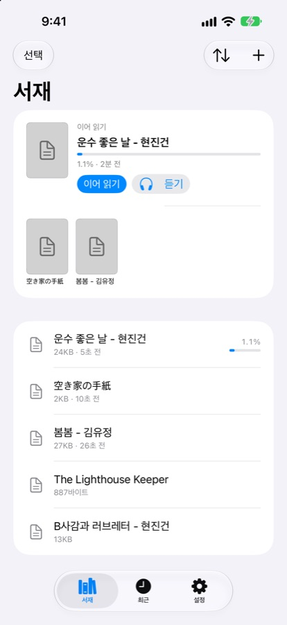
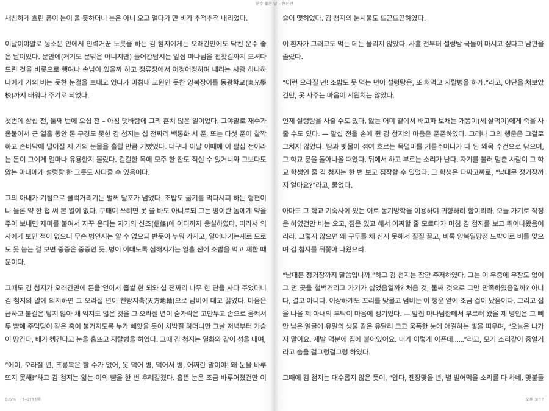
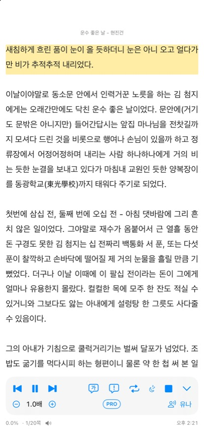
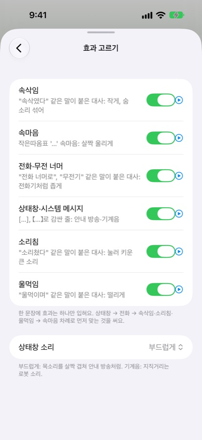
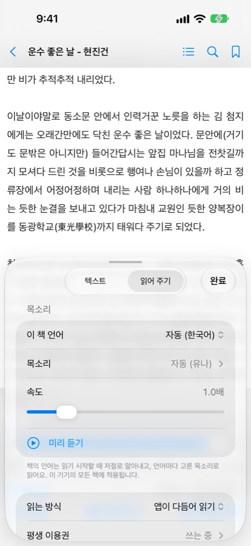
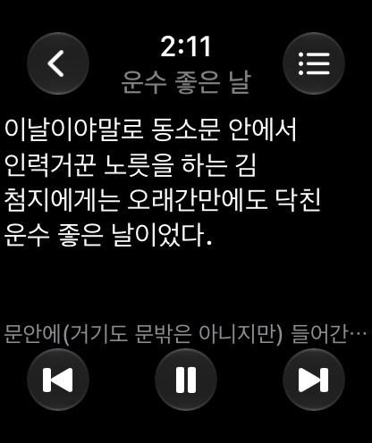

Hearbook 사용 안내 User Guide
내 소설을 귀로 듣는 TTS 리더 · A TTS reader for listening to your own novels
Hearbook(히어북)은 내가 가진 소설과 텍스트 파일을 iPhone 안의 Apple 목소리로 읽어 주는 앱이에요. 앱 안에 책은 들어 있지 않고, 가입·광고·서버가 없어요. 글은 인터넷으로 나가지 않고 기기 안에서 읽어요.
1. 책 넣기

- 파일 앱에서: 서재 오른쪽 위 ＋ → 파일 가져오기로 책 파일을 고르세요. 폴더째 가져오기로 폴더 안의 책을 한 번에 넣을 수도 있어요.
- 다른 앱에서: 메일·메신저·파일 앱에서 파일을 공유 → Hearbook.
- PC에서 와이파이로: ＋ → 와이파이로 PC에서 보내기를 열면 주소가 나와요. 같은 와이파이의 컴퓨터 브라우저에서 그 주소를 열고 파일을 끌어다 놓으세요. 화면에 보이는 4자리 숫자를 넣어야 보낼 수 있고, 이 화면을 닫으면 끝나요.
- 폴더 연결: iCloud Drive, Google Drive, OneDrive, NAS 폴더를 연결해 두면 둘러보며 골라 읽을 수 있어요.
- 만화: ZIP·CBZ·CBR·CB7, 그림 폴더, 사진 앨범, 스캔 PDF를 만화로 가져와요.
읽을 수 있는 형식: TXT(인코딩 자동 판별), EPUB, 글자가 든 PDF, 만화. DRM으로 잠긴 전자책과 암호가 걸린 PDF는 열 수 없어요.
서재에서 책을 길게 누르면 이름 바꾸기, 폴더로 옮기기, Face ID로 잠그기, 삭제를 할 수 있어요.
2. 읽기
- 책을 열고 화면 가운데를 누르면 메뉴가 나와요. 목차, 검색, 책갈피, 화면 설정(가가 화면)이 있어요.
- 쪽 넘김과 스크롤, 종이 말림 효과, 글꼴·크기·줄 간격·여백, 낮·밤 테마를 바꿀 수 있어요.
- TXT는 "1화", "제3장" 같은 제목을 찾아 목차를 만들어요.
- 글을 길게 눌러 형광펜·메모를 남기거나, 여기부터 읽기로 그 자리부터 읽어 줄 수 있어요.
- iPad와 펼친 iPhone Duo는 가로로 들면 두 쪽으로 보여요. 일본어·중국어는 세로쓰기로도 읽어요.

3. 읽어 주기

- 책을 열고 화면 가운데를 눌러 읽어 주기를 누르세요. 화면에 보이는 곳부터 읽어요.
- 아래 조절판에서 멈춤, 이전·다음 문장, 빠르기(0.6~3.0배), 목소리를 바꿔요.
- 잠금 화면, 제어 센터, 이어폰 단추로도 조작할 수 있어요. 다른 앱 소리(전화, 내비 안내 등)가 끝나면 이어 읽어요.
조절판의 다른 단추
- 방금 문장 고치기: 방금 읽은 문장을 다시 듣고, 발음을 고치거나 다른 목소리로 비교해요.
- 구간 반복: 한 문장이나 한 화를 되풀이해요.
- 수면 타이머: 정한 시간 뒤나 이 챕터 끝에서 멈춰요. 다음에 그 자리부터 이어 들어요.
더 자연스럽게 듣기
- 자연스럽게 다듬기: 숫자, 날짜, 단위, 기호, 줄임말을 말하듯 읽어요. (예: 6월 → 유월, Lv.99, HP 30%)
- 대사 감정 살리기, 대사·지문 목소리 나누기: 대사와 생각, 지문을 다른 목소리나 억양으로 읽어요.
- 소리 효과: 속삭임, 속마음, 전화 너머, 상태창, 소리침, 울먹임.
- 섞인 외국어: 한국어 책 속 영어 문장처럼 다른 언어는 그 언어 목소리로 읽어요.
- 발음 사전, 읽지 않을 문구: 이름 발음을 고치거나, 작가 후기·공지 같은 문구를 건너뛰어요.


설정은 책을 연 뒤 메뉴의 화면 → 읽어 주기 탭에 있어요.
4. 목소리
- 기본은 자동이에요. 책의 언어를 알아내 그 언어 목소리로 읽어요. 한국어는 기본 목소리(유나)가 가장 또렷해요.
- 다른 목소리를 받으려면 iPhone 설정 → 손쉬운 사용 → 읽기 및 말하기 → 음성에서 언어를 고르고 내려받으세요. 앱의 목소리 → 목소리 더 받기 안내에도 순서가 있어요.
- 내 목소리(Personal Voice)를 만들어 두었다면 허락한 뒤 내 목소리로 들을 수 있어요.
- 한국어, 영어, 일본어, 독일어, 스페인어, 프랑스어, 이탈리아어 책을 알아보고 맞는 목소리를 골라요.
5. Apple Watch

- 리모컨 (무료): iPhone이 읽는 동안 워치에서 Hearbook을 열면 리모컨이 떠요. 멈춤, 앞뒤 문장(디지털 크라운으로도), 음량과 빠르기(톱니바퀴)를 바꿔요.
- 워치 혼자 듣기 (Hearbook Pro): 서재에서 책을 길게 눌러 Apple Watch로 보내기. 블루투스 이어폰을 워치에 연결하면 iPhone 없이 들을 수 있어요.
- 워치와 iPhone에서 번갈아 들으면, 책을 열 때 "어디서부터 읽을까요?"라고 물어 더 읽은 곳으로 이어 갈 수 있어요.
6. iCloud 동기화와 백업
- 서재 목록, 읽은 위치, 책갈피, 형광펜·메모, 설정은 내 iCloud로 같은 Apple ID의 iPhone·iPad 사이에 맞춰져요.
- 책 파일은 기본으로 기기에만 있어요. 다른 기기에서도 파일째 보고 싶으면 설정 → 동기화 → 책 파일도 iCloud에 올리기를 켜세요. 켜기 전에 올라갈 크기를 알려 줘요.
- 다른 기기에서 더 읽었으면 책을 열 때 "어디서부터 읽을까요?"라고 물어요. 설정에서 묻지 않고 바로 옮기게 바꿀 수 있어요.
- 설정 → 백업 → 백업 파일 만들기로 기록과 설정을 파일 하나로 내보내고, 백업에서 되살리기로 되돌려요.
7. 무료 시간과 Hearbook Pro
- 책 읽기, 서재, iCloud 동기화, 워치 리모컨은 모두 무료예요.
- 읽어 주기는 매일 1시간 무료예요. 처음 30분은 모든 기능으로, 다음 30분은 기본 읽기로 들어요. 남은 시간은 조절판의 배지에 보여요. 날짜가 바뀌면 다시 생겨요.
- Hearbook Pro는 한 번만 결제하면 평생 써요(구독 아님). 시간 제한 없이 모든 기능을 쓰고, 워치 혼자 듣기가 열려요. 가족 공유도 돼요.
- 기기를 바꾸었거나 앱을 다시 설치했으면 설정 → Hearbook Pro → 구매 복원을 누르세요.
8. 자주 묻는 질문
목소리가 딱딱하거나 이상하게 읽어요
조절판의 방금 문장 고치기로 그 문장을 다른 목소리와 비교해 보세요. 이름처럼 특정 낱말이 틀리면 발음 사전에 넣으면 돼요. 향상됨·프리미엄 목소리는 언어에 따라 더 자연스럽기도, 낱말을 뭉개기도 해요.
글자가 깨져 보여요
오래된 TXT는 인코딩이 다를 수 있어요. 책을 연 뒤 메뉴의 화면 설정 아래쪽 인코딩에서 직접 골라 보세요.
목차가 안 나오거나 이상해요
제목 줄("1화", "제1장", "001." 등)을 찾아 목차를 만들어요. 제목 형식이 일정하지 않은 책은 목차가 빠질 수 있어요. 그런 책도 검색과 책갈피로 이동할 수 있어요.
다른 앱 소리가 나면 읽기가 멈춰요
전화나 알림 소리가 나면 잠시 멈추고, 끝나면 이어 읽어요. 직접 멈췄다면 조절판이나 잠금 화면에서 다시 재생하세요.
문의는 어디로 하나요?
giveing7777@gmail.com으로 보내 주세요. 앱의 설정 → 정보 → 문제 보내기로 기기·버전 정보를 담은 보고서를 함께 보낼 수 있어요.
User Guide
Hearbook reads your own novels and text files aloud with the Apple voices on your iPhone. It includes no books, and has no sign-up, ads or servers. Text never leaves your device.
1. Adding books
- From Files: tap ＋ → Import Files at the top right of the library, or Import Entire Folder.
- From other apps: share a file and choose Hearbook.
- From a computer over Wi‑Fi: open ＋ → Send from Computer over Wi‑Fi, open the address shown in a browser on the same Wi‑Fi, enter the 4-digit code and drag files in. It stops when you close the screen.
- Linked folders: link an iCloud Drive, Google Drive, OneDrive or NAS folder and browse it.
- Comics: ZIP, CBZ, CBR, CB7, image folders, photo albums and scanned PDFs.
Supported: TXT (encoding detected automatically), EPUB, PDF with text, and comics. DRM-protected e-books and password-protected PDFs can’t be opened.
2. Reading
- Tap the center of the page for the menu: contents, search, bookmarks and display settings.
- Choose page turning or scrolling, page curl, font, size, spacing, margins and day/night themes.
- For TXT files, Hearbook builds a table of contents from headings like “Chapter 3”.
- Long-press text to add highlights and notes, or to start reading aloud from there.
- On iPad and an unfolded iPhone Duo, landscape shows two pages. Japanese and Chinese can be read in vertical writing.
3. Read aloud
- Open a book, tap the center and tap Read Aloud. It starts from what’s on screen.
- Use the control panel to pause, skip sentences, change speed (0.6–3.0×) or the voice.
- Lock screen, Control Center and earbud buttons work too. Reading resumes after other audio (calls, navigation) ends.
- Fix Last Sentence: replay the last sentence, fix its pronunciation or compare voices.
- Repeat a sentence or chapter, and a sleep timer that can stop at the end of the chapter.
- Natural reading: numbers, dates, units, symbols and abbreviations are read the way people say them.
- Dialogue can use a different voice or expression from narration.
- Sound effects: whisper, inner voice, phone, status window, shout, sobbing.
- Mixed languages are read with the matching voice; a pronunciation dictionary and skip rules (author notes, notices) are available.
4. Voices
- Auto (default) detects the book’s language and uses that language’s voice.
- To download more voices, go to iPhone Settings → Accessibility → Read & Speak → Voices. The app’s voice guide shows the steps.
- If you have created a Personal Voice, you can allow Hearbook to use it.
- Books in Korean, English, Japanese, German, Spanish, French and Italian are recognized.
5. Apple Watch
- Remote (free): while your iPhone is reading, open Hearbook on the watch to pause and skip sentences (also with the Digital Crown), and to change volume and speed (gear button).
- Listen on the watch alone (Hearbook Pro): long-press a book and choose Send to Apple Watch. Connect Bluetooth earbuds to the watch and listen without your iPhone.
- If you switch between devices, Hearbook asks where to continue when you open the book.
6. iCloud sync and backup
- Your library, reading positions, bookmarks, highlights, notes and settings sync through your own iCloud.
- Book files stay on the device by default. Turn on Settings → Sync → Also upload book files to iCloud if you want them on your other devices too.
- Settings → Backup exports your records and settings to a single file and restores them.
7. Free time and Hearbook Pro
- Reading, the library, iCloud sync and the Apple Watch remote are free.
- Read aloud is free for 1 hour a day: the first 30 minutes with every feature, the next 30 minutes with basic reading.
- Hearbook Pro is a one-time purchase for life (not a subscription). It removes the time limit, unlocks every feature and listening on Apple Watch alone, and supports Family Sharing.
- On a new device, tap Settings → Hearbook Pro → Restore Purchase.
8. FAQ
The voice sounds robotic or mispronounces words
Use Fix Last Sentence to compare other voices, and add names to the pronunciation dictionary.
Text looks garbled
Older TXT files may use a different encoding. Open the book, then choose an encoding under Encoding in the display settings.
No table of contents
Contents are built from headings. Books without consistent headings may have none; use search and bookmarks instead.
Contact
Email giveing7777@gmail.com. In the app, Settings → About → Report a Problem creates a report with device and version information.